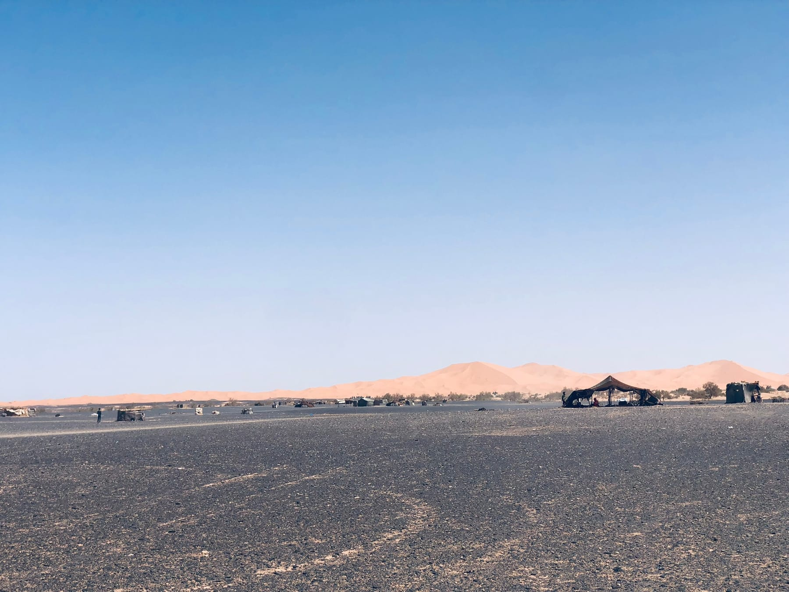
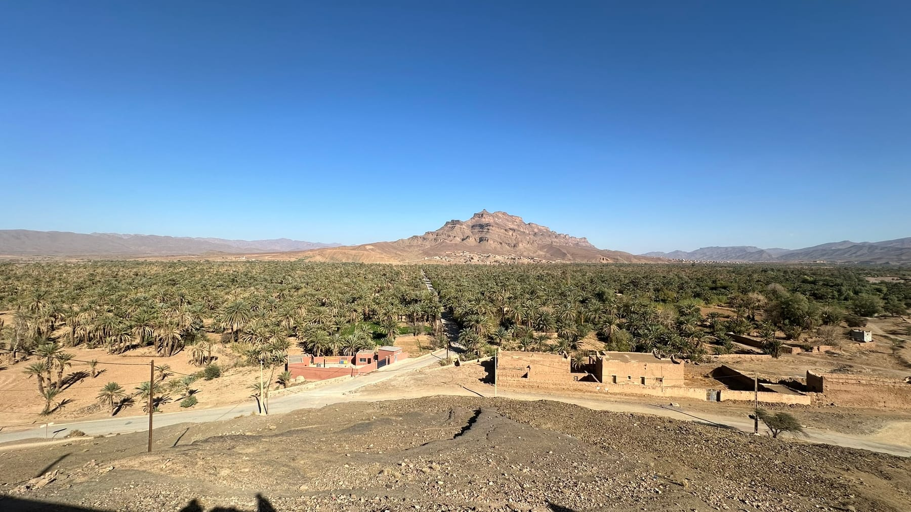
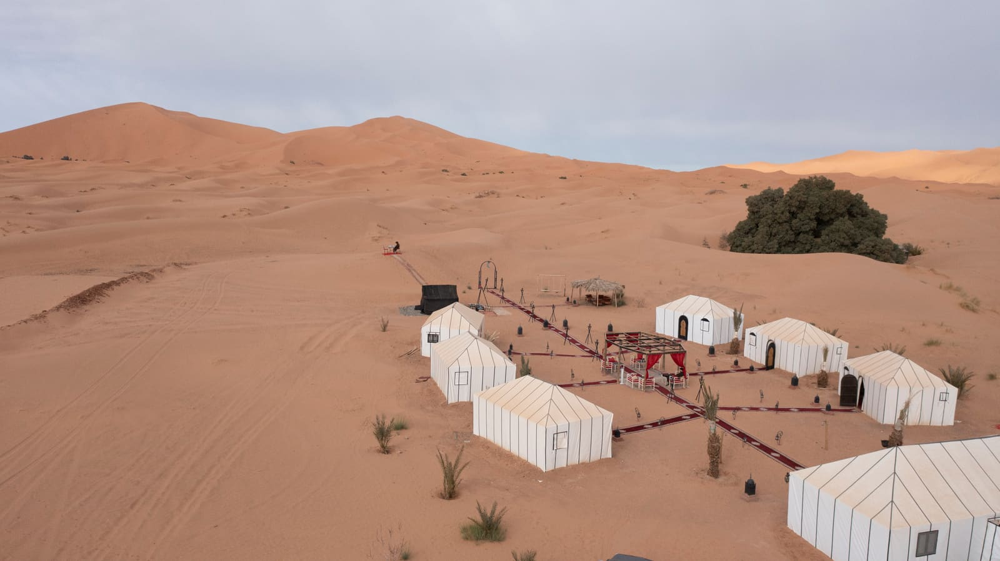
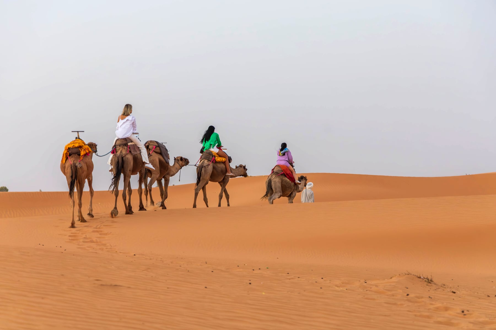

The short answer: Merzouga (the Erg Chebbi dunes) is the best all-round Sahara experience in Morocco and needs at least 3 days from Marrakech or 2–3 from Fes. Erg Chigaga is wilder and quieter but more remote, so allow 5 days. Zagora is closer, but its dunes are small; the Draa Valley drive is the real highlight. Agafay, 45 minutes from Marrakech, is a stony desert with no sand dunes. It's good for a sunset dinner, but it isn't the Sahara.
“The Sahara” is probably the most searched-for part of any Morocco trip. The trouble is that four very different places get sold under that one name. One is a rocky plateau within sight of Marrakech's rooftops. Another is a sea of apricot-colored dunes a full day's drive away. Which one you choose will shape your whole itinerary: how many days you need, how much of the trip is spent in a car, and whether you actually wake up surrounded by sand.
This guide compares all four honestly, with the drive times our driver-guides actually work with, so you can choose the desert that fits your trip.
Morocco's Four Desert Options at a Glance
| Desert | Landscape | From Marrakech | Minimum sensible trip | Best for |
|---|---|---|---|---|
| Agafay | Stony plateau and bare hills, no sand dunes | ~40 km, about 45–60 min | An afternoon or one night | A short stay in Marrakech, a sunset dinner |
| Zagora | Palm oases, with small dune patches beyond the town | ~365 km, about 6h30 | 2 days, though that's rushed | The Draa Valley, kasbahs and oasis culture |
| Erg Chigaga | A large, remote dune sea reached by 4x4 off-road | ~460 km to M'Hamid, then ~60 km of track | 4–5 days | Solitude, and travelers who have already “done” Merzouga |
| Merzouga (Erg Chebbi) | Tall golden dunes rising to around 150 m | ~550 km, usually split over 2 days | 3 days (2–3 from Fes) | First-timers who want the classic Sahara |
Distances and times are for the routes we drive. Times don't include photo stops, which on these roads always take longer than you'd expect.
Agafay: The “Desert” Next to Marrakech
Agafay is a stony desert, meaning gravel plains and rolling, bare hills rather than sand. It sits about 40 km southwest of Marrakech. On a clear day the snow-capped High Atlas stands along the horizon, and that view is Agafay's real draw. Over the past few years it has filled with glamping camps, quad-bike and camel outfits, and restaurants serving dinner under the stars.

Who Agafay suits
- Travelers with only a few days in Marrakech who want a taste of open space and a memorable evening
- A soft first or last night of a longer trip, close to the airport
- Families with young children who would find long drives difficult
The honest caveat
If you're picturing sand dunes, Agafay will disappoint you. Many travelers only find this out once they arrive. Treat it as a lovely evening out, not as your Sahara experience. If the desert is one of the main reasons you're coming to Morocco, save it for Merzouga or Erg Chigaga.
Zagora and the Draa Valley: When the Road Is the Point
Zagora is the desert outpost at the southern end of the Draa Valley, famous for its old “Tombouctou 52 jours” sign marking the camel-caravan route to Timbuktu. The drive there is outstanding. You cross the High Atlas on the Tizi n'Tichka pass, stop at Ait Benhaddou, then follow the river south through Agdz past miles of date palms and crumbling mud-brick kasbahs.

The dunes are the weak point. Zagora itself sits among palm groves, and the nearest sand is a few small dune patches further south. They're pretty at sunset, but they're a glimpse of the Sahara rather than the real thing. The popular 2-day Zagora trip also means 13 or more hours in a vehicle in 48 hours.
Choose Zagora if you have limited time, you're more interested in oasis villages and kasbahs than in big dunes, or you're continuing south to Erg Chigaga anyway.
Erg Chigaga: The Remote, Quieter Sahara
Erg Chigaga is widely described as Morocco's largest dune sea. It's also the hardest to reach, and that's the point. The paved road ends at M'Hamid El Ghizlane, the last village before the open desert. From there a 4x4 crosses around 60 km of hamada, dry lakebed and sand track, which takes about 1h45. There's no village at the foot of the dunes and far fewer camps than in Merzouga. At night the silence is total.
Because of the distance, Erg Chigaga doesn't work as a quick trip. Our 5-day Marrakech to Erg Chigaga journey spends two nights among the dunes, so you get a full day to explore by 4x4 and on foot rather than arriving at dusk and leaving at dawn.
Choose Erg Chigaga if you want to feel truly remote, you're a photographer or a return visitor, or you'd simply rather not share the dunes. It's less suitable for anyone who dislikes rough off-road driving.
Merzouga and Erg Chebbi: The Classic Sahara
The Erg Chebbi dunes at Merzouga are what most people picture when they think of the Moroccan Sahara. Golden-orange ridges rise to around 150 metres and turn deep copper at sunset. The tarmac runs right to the edge of the sand, so the effort of getting there goes into the drive rather than off-road tracks. Once you arrive, the camel trek into camp takes about an hour. Our camel trekking guide explains what that ride is really like.

Merzouga also has more to do than any other Moroccan desert. You can listen to Gnawa music in the village of Khamlia, visit nomad families on the hamada, and see the seasonal flamingo lake at Dayet Srij. There's also the widest range of camps, from simple to genuinely luxurious. If you're wondering what a night there feels like, read our guide to a night in a Sahara desert camp.
How long does it take to reach Merzouga?
From Marrakech it's around 550 km. Private tours split this over two days, usually overnighting in the Dades Valley, which makes our 3-day Marrakech to Merzouga tour the practical minimum. From Fes it's about 470 km through the Middle Atlas cedar forests. That's a long single day, but it makes a 3-day round trip from Fes or even a 2-day express possible. Merzouga also sits naturally on the way between Marrakech and Fes, so a 4-day Marrakech to Fes desert crossing includes the dunes without any backtracking.
Which Moroccan Desert Should You Choose?
“We only have two or three days, all based in Marrakech.”
Be honest about what matters. If you want real dunes, a 3-day Merzouga trip is worth the driving, and the Atlas crossing and Dades Valley are highlights in their own right. If you mainly want a peaceful evening away from the medina, an Agafay night is enough.
“We're traveling between Marrakech and Fes.”
Merzouga, without question. It lies on the natural route between the two cities, so you get the desert as part of the journey. For more on this, see our guide to choosing a Marrakech to Merzouga tour.
“We want the desert to ourselves.”
Erg Chigaga. Allow 5 days round trip from Marrakech, including two nights in the dunes.
“We want both kinds of Sahara.”
It can be done. Our 10-day Ultimate Desert Journey covers both Merzouga and Erg Chigaga in a loop from Marrakech.
“We're traveling with young children or older parents.”
Merzouga is still usually the best choice. The roads are paved all the way, the camel ride is short (and optional, since camps can also be reached by 4x4), and the drive breaks easily into comfortable stages. With a private driver, you can also stop whenever someone needs to.

Common Mistakes When Choosing a Desert
- Booking Agafay and expecting dunes. This is the most common disappointment. Look closely at the photos: if you see rock and hills, that's what you'll get.
- Assuming a 2-day Zagora trip is “the Sahara, but faster”. It's faster, but the dunes are a small fraction of the scale of Erg Chebbi.
- Underestimating distances. Morocco looks compact on a map, but mountain roads are slow. A 3-day Merzouga round trip from Marrakech involves real driving, and the scenery is part of what you're there for.
- Choosing a camp from one photo. Ask whether tents have private bathrooms, proper beds and heating or heavy blankets. The difference between camps is huge, especially in winter.
- Ignoring the season. Midday in July and August is fierce, and December nights can drop close to freezing. Our guide to the best time to visit the Sahara goes through it month by month.
Why a Private Tour Makes Desert Trips Easier
On a shared minibus tour, the route, the stops and the camp are fixed for everyone on board. With your own driver-guide, the long days become flexible. You can linger at Ait Benhaddou, break the drive where it suits you, and choose the level of camp you actually want. If you're not sure which desert fits your dates, see our tailor-made tours from Marrakech or tell us how many days you have. We'll give you an honest recommendation, even if that's a short Agafay evening.